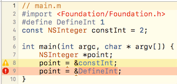

ObjC中的define、static、extern和const
正确导出常量的姿势
| 更新时间 | 更新内容 |
|---|---|
| 2017-06-05 | 发布 |
| 2017-09-19 | 补上目录 |
ObjC中的define、static、extern和const正确导出常量的姿势前言Static静态全局变量（static global variable）静态成员变量（static member variables）静态局部变量（static local variables）Extern同文件的extern扩展外部变量（external variable）跨文件的extern扩展Const复杂的常量定义Define原封原样的替换定义的值无类型无法处理成指针对debug不友好可能被覆盖定义Const配合Extern导出外界不可以修改的常量
前言
讲道理这些用处都完全不一样，为什么大家喜欢一起讲……那么既然都喜欢一起讲，我也写在一起好了……
另外值得一提的是，这些其实就是纯C的东西，并不是ObjC才特有的。
Static
参照维基百科，C语言里对此关键词的定义是一个存储类型（storage class），用来控制变量的生命周期和可见性。
static关键字会把一个变量的生命周期变成和程序的生命周期等同，这个感觉不用多介绍了，大家应该都懂的。
static变量对每个编译单元都是内部可见且分别独立的，这个的意思参照例子：
// Public.h static NSInteger staticInt = 0;
// ClassA.m
#import "ClassA.h"
#import "Public.h"
@implementation ClassA
+ (void)test {
NSLog(@"%zd", staticInt++);
}
@end
// ClassB.m
#import "ClassB.h"
#import "Public.h"
@implementation ClassB
+ (void)test {
NSLog(@"%zd", staticInt++);
}
@end
// main.m
#import "ClassA.h"
#import "ClassB.h"
int main(int argc, char * argv[]) {
[ClassA test];
[ClassA test];
[ClassB test];
}
输出：
0 1 0
一个编译单元简单来说就是一个.m文件，这里的ClassA和ClassB都引用了Public.h，但是因为这是两个编译单元，所以它们虽然都有staticInt这个静态变量，但是实际上是两个独立的静态变量，这两个独立的静态变量只对它们所在的文件内部可见。
静态全局变量（static global variable）
上述的例子就是一个静态全局变量，通常将变量定义在文件的顶部，这样就对整个文件都可见了。
你问我为什么定义在顶部的话，那是因为：
C语言就是这样的啊……定义在中间，在这之前的代码就访问不到了。
但是有比较奇特的一点：
ObjC里面定义在@implementation段内的静态全局变量，作用范围会从当前的@implementation开始。
静态成员变量（static member variables）
这是C++的概念，很可惜在ObjC中并没有这个概念。
在C++类的内部声明的静态变量会变成在这个类内部才能访问的静态成员变量。
但是在上一节中大家也看到了ObjC中在@implementation段内的仍然是静态全局变量。
在@interface段中声明静态变量则会直接报错：
静态局部变量（static local variables）
定义在函数体内的为静态局部变量，和定义在函数内的普通局部变量一样，在函数外是不可见的。例子如下图：
要注意这里的static = 0是初始化，并不是赋值，仅会运行一次。
通常来说我们建立单例的时候就应该使用静态局部变量。另外很重要的一点，在创建单例的时候最好用dispatch_once方法避免多线程问题。
Extern
同文件的extern扩展
从纯C开始说起吧，因为同文件的extern一般来说只有纯C里需要：
可以看到因为int a = 0写在了main函数之后，所以main函数是访问不到变量a的。
这时候就要用到extern关键字，扩展变量的有效可见范围，就可以在main函数中访问到变量a了。
在ObjC中，我们几乎已经不需要用到这种用法了。
外部变量（external variable）
参照维基百科，所谓外部变量就是定义在函数体外的变量。通常会把外部变量统一定义在文件顶部，这样就免去上面说的用extern扩展的麻烦了。在这种情况下，在文件内所有函数里就都可以访问到这个变量了。
关于外部变量的编译相关原理细节在此就不多述，有兴趣的可以自行查阅资料。
跨文件的extern扩展
记得文章开始的截图么，extern关键字也是一个存储类型（storage class）。extern和static的不同点在于全程序共用一个变量而非每个编译单元有自己的独立变量，用了extern关键字之后变量将变得真正意义的全局可见。
为了方便理解，举个例子：
// Public.m // 注意这是.m文件！注意这是.m文件！注意这是.m文件！ #import "Public.h" NSInteger externInt = 0;
// ClassA.m
#import "ClassA.h"
extern NSInteger externInt;
@implementation ClassA
+ (void)test {
NSLog(@"%zd", externInt++);
}
@end
// ClassB
#import "ClassB.h"
extern NSInteger externInt;
@implementation ClassB
+ (void)test {
NSLog(@"%zd", externInt++);
}
@end
// main.m
#import "ClassA.h"
#import "ClassB.h"
int main(int argc, char * argv[]) {
[ClassA test];
[ClassA test];
[ClassB test];
}
输出：
0 1 2
可以看到这时ClassA和ClassB引用到的externInt是同一个变量。
注意最开始的是Public.m而不是Public.h文件！extern的用法和static是略有不同的，定义变量时只要将变量在.m文件里常规的定义成外部变量即可，使用的时候在对应外部文件里直接extern扩展下即可使用。
通常情况下，我们是成对的这样.m文件和.h文件：
// Public.m #import "Public.h" NSInteger externInt = 0;
// Public.h #import <Foundation/Foundation.h> extern NSInteger externInt;
这样外部文件只需要#import "Public.h"就可以直接引用到externInt了。
Const
参照维基百科，通常习惯叫被const修饰的变量为常量，const是一个类型修饰词（type qualifier），用来表示这个『变量』是不可修改的。
可以看到只能在定义常量的时候进行初始化，在之后的代码里再进行值的修改就会报错。
值得一提的是，const定义的常量是在编译器就确定好值的。所以大部分需要编译期就确定值的语法里，常量都是可以使用的：

这也是很多情况下推荐使用常量的原因之一。后面还会和宏定义做个对比，在那之前先继续说常量的定义姿势。
复杂的常量定义
对指针变量怎么用const关键字应该是最绕的部分了，简单概括的话就是const修饰的右侧内容无法被修改。详细的直接看下面的例子：
如果想要完全不能修改，采用d的策略就好了。通常情况下定义指针型常量都是字串型的，因为NSString型变量本身值是不可以修改的，所以一般来说定义如下：
NSString * const constString = @"test";
这样就可以保证别人不能写constString = xxx;了。
Define
define并不是一个C语言的关键字，它只是一个预处理指令，在进行编译之前会做原封原样的替换。
原封原样的替换
简单来说这两段代码是一毛一样的：
#define DefineInt 1 int defineInt = DefineInt;
int defineInt = 1;
关于原封原样替换的解释，下面这个例子应该是最常用的：
#define DefineInt 1 + 2
int main(int argc, char * argv[]) {
NSLog(@"%zd", DefineInt * 3);
}
输出结果为7，因为实际上代码等同于：
int main(int argc, char * argv[]) {
NSLog(@"%zd", 1 + 2 * 3);
}
可以看出来『原封原样』是什么意思了吧？define的内容并不会成为一个单元，而只是原样的替换而已。当然原样替换并不是define的缺点，而是一个特性。
定义的值无类型
上面的例子可以看出来宏定义的值类型十分灵活，所以在上面的代码里第7行和第8行都不会出警告，而常量因为包含明确指定的类型就会出警告。
任何事情也都有双面性，在更需要明确的类型检查时，这个特性就会成为一个隐患。当然其实也有办法可以处理类型检查的问题：
在面对更复杂的场景时，这种写法还是可能有一些别的问题的。在需要类型检查时，建议使用常量来代替宏定义。
无法处理成指针
参照下面的例子（警告的地方是因为常量指针和变量指针还是略有不同的）：

因为宏定义只是原封原样替换，所以理所当然编译器不会为其分配地址，所以是无法做指针操作的。
在面对一些需要传递指针的场景，宏定义的值无法直接使用。
对debug不友好
debug的时候上面的DefineInt是无法在调试台显示的，只能自己去源代码里查阅定义的值是多少。
可能被覆盖定义
这点真的很重要，define是可以被undefine的，然后再重新定义成别的值。如果团队里的成员沟通协作出现问题，同名的define覆盖了别人定义的值，会出很诡异的甚至可能灾难性的问题。
Const配合Extern导出外界不可以修改的常量
首先参照下系统提供的一些extern导出示例：
// NSError.h FOUNDATION_EXPORT NSString *const NSLocalizedDescriptionKey; // NSString FOUNDATION_EXPORT NSString *const NSLocalizedFailureReasonErrorKey; // NSString FOUNDATION_EXPORT NSString *const NSLocalizedRecoverySuggestionErrorKey; // NSString ...
// UIWindow.h UIKIT_EXTERN const UIWindowLevel UIWindowLevelNormal; UIKIT_EXTERN const UIWindowLevel UIWindowLevelAlert; UIKIT_EXTERN const UIWindowLevel UIWindowLevelStatusBar __TVOS_PROHIBITED;
FOUNDATION_EXPORT和UIKIT_EXTERN都是iOS SDK定义的宏，主要是处理了C++引用时要用extern "C"的问题，建议大家提供的常量导出是尽量用这两个宏。
关于为什么不使用define，在前文的对比中大概的讲解了。
不使用static配合const的原因在于，static提供的常量会产生很多副本，而且static本身从设计初衷上就不应该是配合const使用的。
extern导出的常量有一个优点就是不会直接展示出具体的常量值是多少，因为实际的初始化是在.m文件里，在对外导出library或者framework的时候.h里面就不会包含这个初始值。（当然用户还是能知道值是多少的就是。）
extern导出的常量还有一个优点，理论上用extern导出的字串常量，在比对时都可以直接用==来直接进行比对而不需要使用isEqualToString。但是考虑代码的健壮性最好仍使用isEqualToString来进行比对，毕竟现在的设备CPU已经不差这么点性能优化了。
所以从最后来说最合适的导出手段，也就是如上iOS SDK导出常量的方式了。